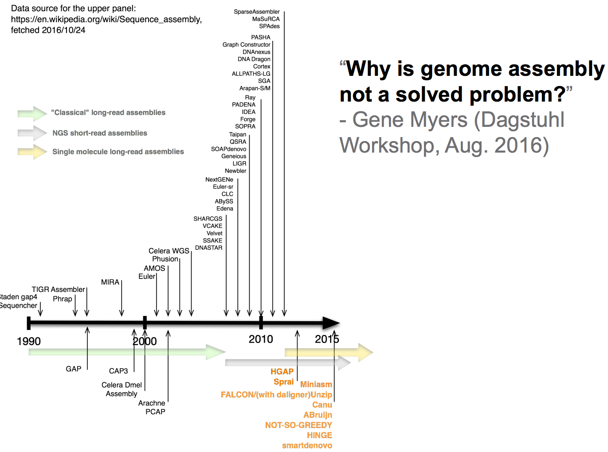
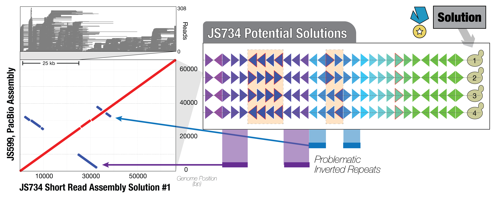
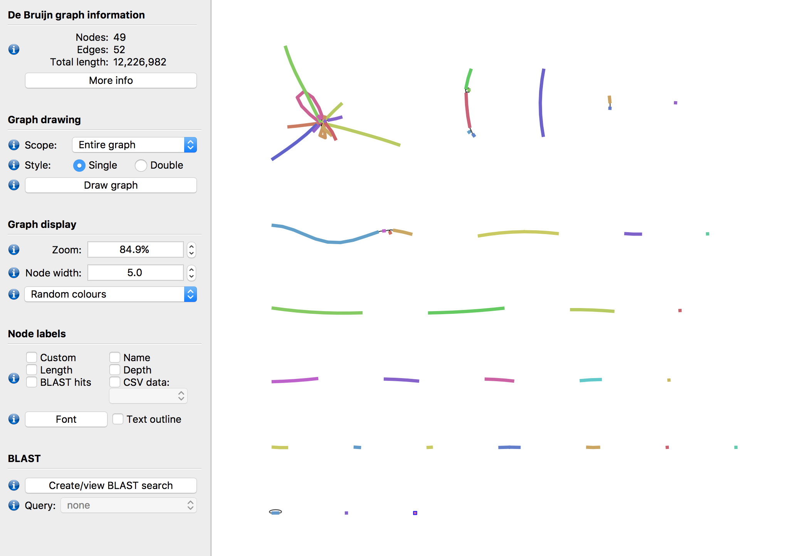

Assembly of a SCRaMbLEd genome
Steinmetz and Stegle Groups, EMBL Heidelberg
Follow along on 
bit.ly/2qNwvGb
Why are genomes organized as we observe them?
"A big step towards an artificial yeast genome"

Gene shuffling with SCRaMbLE
Synthetic Chromosome Recombination and Modification by LoxP-mediated Evolution

Genome assembly is (NP)-hard

64 strains derived from SCRaMbLE of SynIXR
Each genome segment identified by color and number. ~1 gene per segment. SCRaMbLEgram
Extensive heterogeneity among SCRaMbLE strains

Near complete assembly of SCRaMbLE genomes with long-reads
**JS734 could only be solved by aggregating data from several SMRT cells**
Variable difficulty of de novo assembly for SynIXR SCRaMbLEs

Fixed mean read length = 3.98 kb

Genome assemblies are graphs
JS613 is difficult to assemble even with long reads
Alignment-based interpretation
A single CATCH read is sufficient to complete the assembly

Catch design is difficult: there are caveats
-
Specific long reads can complete genome assemblies
- obtained by Cas9-approaches
- esp. handy for repeats
-
Crimping is easier than CATCHing
- Fewer design issues, multiplex, capture ends
-
We're dev protocols/design tools for Cas9-assisted genome assembly
- Goal: complete assemblies for 23 SynIXR SCRaMbLE strains
- Looking for challenges in other popular models systems. Ideas?
Reasonably complete de novo assembly of yeast genome
>125 average coverage of our PacBio data, JS734. ~5kb mean reads length